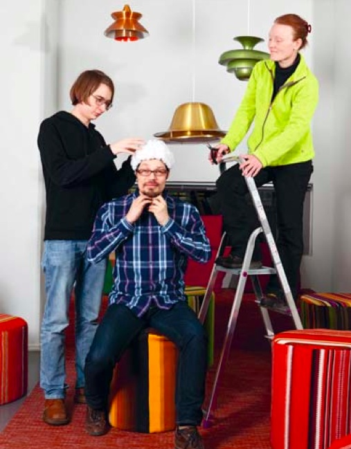

Brainwise is a wearable electronics project we made together with costume designer Metti Nordin. It's an EEG hat that displays the wearers brain activity on the surface, through light fibre and RGB LED's. It's actually already quite well documented on the course blog. The work was also featured in the Aalto University Magazine.
To see the thinking cap in action, look at the course project demo video, our part starts at 6:30.
